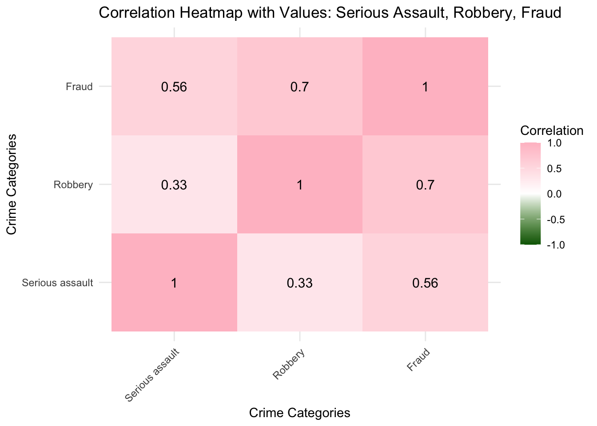
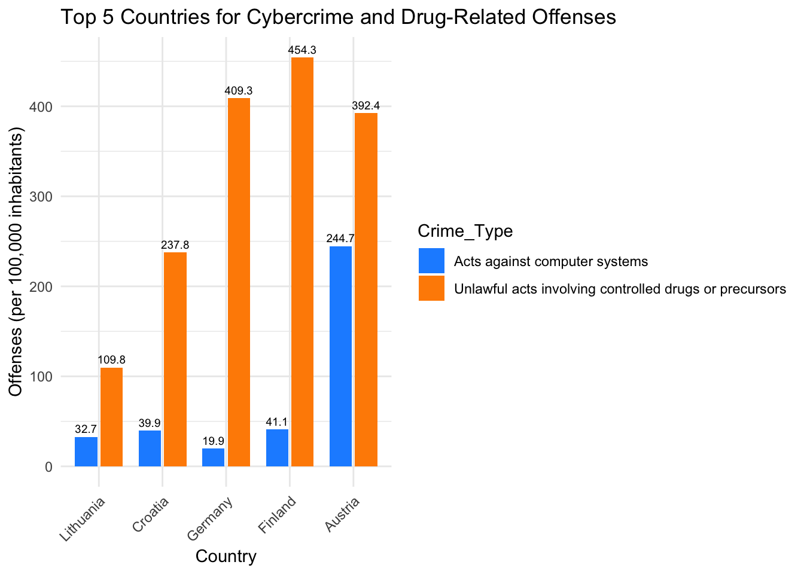

Analysis of Crime Offences in European Countries (2022)
Author
Aakriti Abhay Singh 24215296
Introduction
This report analyzes the dataset crim_off_cat_2022.xlsx, which records various offenses per hundred thousand inhabitants in 41 European countries for the year 2022. The objective of this report is to perform data manipulation and cleanup, and to derive insights regarding crime rates across different countries.
Task 1: Data Manipulation
1. Loading the Dataset
First, we will load the necessary library and import the dataset from the provided Excel file. We will skip the first eight rows to obtain the relevant data.
We will rename the first column to “Country” for clarity
colnames(dataset)[1] <-"Country"colnames(dataset)
[1] "Country"
[2] "Intentional homicide"
[3] "Attempted intentional homicide"
[4] "Serious assault"
[5] "Kidnapping"
[6] "Sexual violence"
[7] "Rape"
[8] "Sexual assault"
[9] "Sexual exploitation"
[10] "Child pornography"
[11] "Robbery"
[12] "Burglary"
[13] "Burglary of private residential premises"
[14] "Theft"
[15] "Theft of a motorized vehicle or parts thereof"
[16] "Unlawful acts involving controlled drugs or precursors"
[17] "Fraud"
[18] "Corruption"
[19] "Bribery"
[20] "Money laundering"
[21] "Acts against computer systems"
[22] "Participation in an organized criminal group"
4. Remove the following columns:
Child pornography
Rape
Sexual assault
Theft
Theft of a motorized vehicle or parts thereof
Burglary
Burglary of private residential premises
we will install dplyr package
library(dplyr)
Attaching package: 'dplyr'
The following objects are masked from 'package:stats':
filter, lag
The following objects are masked from 'package:base':
intersect, setdiff, setequal, union
dataset_clean <- dataset %>%select(-`Child pornography`, -Rape, -`Sexual assault`, -Theft, -`Theft of a motorized vehicle or parts thereof`, -Burglary, -`Burglary of private residential premises`)colnames(dataset_clean)
we will identify countries that contain any missing data. We will replace any occurrences of “:” with NA and then count the number of missing values for each country.
dataset_clean[dataset_clean ==":"] <-NAdataset_clean$missing_count <-rowSums(is.na(dataset_clean))countries_with_missing_data <- dataset_clean %>%filter(missing_count >0) %>%select(Country, missing_count)cat("Countries with missing data and their missing value counts:\n")
Countries with missing data and their missing value counts:
print(countries_with_missing_data)
# A tibble: 27 × 2
Country missing_count
<chr> <dbl>
1 Belgium 1
2 Denmark 3
3 Estonia 1
4 Ireland 2
5 France 1
6 Cyprus 1
7 Latvia 1
8 Luxembourg 2
9 Hungary 2
10 Netherlands 6
# ℹ 17 more rows
We will add a new column to our dataset that contains the overall record of offences for each country, calculated as the sum of the other offence-related columns.
offence_columns <- dataset_final[ , -which(names(dataset_final) =="Country")]offence_columns_numeric <- offence_columns %>%mutate_all(~as.numeric(.))total_offences <-rowSums(offence_columns_numeric, na.rm =TRUE)dataset_final$Total_Offences <- total_offencescat("Updated dataset with total offences:\n")
dimensions <-dim(dataset_final)cat("Number of observations (rows):", dimensions[1], "\n")
Number of observations (rows): 14
cat("Number of variables (columns):", dimensions[2], "\n")
Number of variables (columns): 16
Data Summary
After cleaning the dataset, we have a total of 14 countries with no missing data and 16 variables (including the new total offenses column).
Key Observations:
The country with the highest recorded offenses is Germany at 3553.38, primarily driven by serious assault and fraud rates.
Spain follows with 2440.44 offenses, while Slovenia has the lowest total at 665.64.
Notably, countries like Italy and Finland exhibit significant rates in various categories, warranting further investigation.
Task 2: Analysis
1. Table of Organized Criminal Group Participation
We will create a table displaying the countries along with their records of participation in an organized criminal group, sorted from highest to lowest values.
the columns (including “Participation in an organized criminal group”) are stored as character strings instead of numeric values. So firstly we need to convert these character strings to numeric values.
A. Convert Character Columns to Numeric
Converting relevant columns to numeric
dataset_final <- dataset_final %>%mutate(across(c(`Participation in an organized criminal group`, `Intentional homicide`, `Attempted intentional homicide`, `Serious assault`, `Kidnapping`, `Sexual violence`, `Sexual exploitation`, `Robbery`, `Unlawful acts involving controlled drugs or precursors`, `Fraud`, `Corruption`, `Bribery`, `Money laundering`, `Acts against computer systems`), as.numeric))
B. Once the conversion is done, you can create the table and identify the country with the highest record as follows:
library(kableExtra)
Attaching package: 'kableExtra'
The following object is masked from 'package:dplyr':
group_rows
organized_crime_participation <- dataset_final %>%select(Country, `Participation in an organized criminal group`) %>%arrange(desc(`Participation in an organized criminal group`)) %>%mutate(`Participation in an organized criminal group`=round(`Participation in an organized criminal group`, 1))kable(organized_crime_participation, caption ="Organized Criminal Group Participation by Country (2022)") %>%kable_styling(full_width = F, position ="left")
Organized Criminal Group Participation by Country (2022)
Country
Participation in an organized criminal group
Spain
4.3
Greece
3.3
Romania
2.7
Albania
1.4
Austria
1.0
Croatia
0.9
Germany
0.8
Italy
0.8
Bulgaria
0.7
Czechia
0.2
Lithuania
0.2
Finland
0.0
Malta
0.0
Slovenia
0.0
2.Country with the Highest Participation
highest_participation_country <- dataset_final %>%filter(`Participation in an organized criminal group`==max(`Participation in an organized criminal group`, na.rm =TRUE)) %>%pull(Country)cat("Country with the highest record of participation in an organized criminal group in 2022:", highest_participation_country, "\n")
Country with the highest record of participation in
an organized criminal group in 2022: Spain
3.plot that visualizes the relationship between Robbery and Unlawful acts involving controlled drugs or precursors.
This analysis provides a detailed overview of crime offenses in European countries, highlighting critical insights and visualizations that can aid in understanding the dynamics of crime in the region.
Task 3: Creativity
PLot1: Heatmap of Serious Assault, Robbery, and Fraud
The heatmap will visualize the relationships between serious assault, robbery, and fraud across countries, allowing us to see how these crime categories correlate with one another.
library(ggplot2)library(reshape2)crime_data <- dataset_final %>%select(Country, `Serious assault`, Robbery, Fraud)correlation_matrix <-cor(crime_data[, -1], use ="pairwise.complete.obs")melted_cor <-melt(correlation_matrix)ggplot(melted_cor, aes(Var1, Var2, fill = value)) +geom_tile() +scale_fill_gradient2(low ="darkgreen", high ="pink", mid ="white", midpoint =0, limit =c(-1, 1), name ="Correlation") +geom_text(aes(label =round(value, 2)), color ="black", size =4) +labs(title ="Correlation Heatmap with Values: Serious Assault, Robbery, Fraud",x ="Crime Categories",y ="Crime Categories") +theme_minimal() +theme(axis.text.x =element_text(angle =45, hjust =1))

This Heatmap summarizes the pairwise correlations:
The correlation between Serious Assault and Fraud is 0.56, which indicates a moderate positive relationship.
Robbery and Fraud have a stronger positive correlation of 0.70.
Serious Assault and Robbery have a lower positive correlation of 0.33.
Interpretation
Serious Assault and Fraud: Moderate correlation suggests that countries with high levels of serious assault may also experience higher fraud rates.
Robbery and Fraud: The strong correlation between robbery and fraud implies that these two crime types tend to occur together more frequently.
Serious Assault and Robbery: The weaker correlation of 0.33 suggests that while they are positively related, the connection between these two crimes is not as strong as with fraud.
Plot 2: Top 5 Countries for Cybercrime and Drug-Related Offenses
library(ggplot2)library(reshape2)top_5_cyber_drug <- dataset_final %>%arrange(desc(`Acts against computer systems`+`Unlawful acts involving controlled drugs or precursors`)) %>%select(Country, `Acts against computer systems`, `Unlawful acts involving controlled drugs or precursors`) %>%slice(1:5)top_5_long <-melt(top_5_cyber_drug, id.vars ="Country", variable.name ="Crime_Type", value.name ="Offenses")ggplot(top_5_long, aes(x =reorder(Country, Offenses), y = Offenses, fill = Crime_Type)) +geom_bar(stat ="identity", position =position_dodge(width =0.8), width =0.7) +geom_text(aes(label =round(Offenses, 1)), position =position_dodge(width =0.8), vjust =-0.5, size =2.5) +scale_fill_manual(values =c("dodgerblue", "darkorange")) +labs(title ="Top 5 Countries for Cybercrime and Drug-Related Offenses",x ="Country", y ="Offenses (per 100,000 inhabitants)") +theme_minimal() +theme(axis.text.x =element_text(angle =45, hjust =1))

Insights
The bar plot highlights the top 5 countries with the highest recorded offenses in cyber crime (Acts against computer systems) and drug-related offenses (Unlawful acts involving controlled drugs or precursors). These countries are Lithuania, Croatia, Germany, Finland, and Austria .
Austria’s Cyber crime Surge: Austria is a major outlier in terms of cybercrime, with 244.7 offenses per 100,000 inhabitants, significantly higher than the other countries. This suggests that Austria faces a unique challenge in the realm of cybercrime, perhaps due to higher internet penetration or sophisticated criminal networks targeting digital systems.
Finland’s Drug-Related Offenses: Finland records the highest drug-related offenses at 454.3. This could indicate higher drug consumption or stricter law enforcement practices targeting drug-related crimes.
Germany’s Balance: Germany shows a moderate level of both cybercrime and drug-related offenses, indicating that it faces issues in both categories but is not an extreme outlier in either.
Lithuania’s Cyber Focus: Lithuania has lower drug-related offenses (109.8) but still reports a moderate rate of cybercrime (32.7). This could suggest a focus on digital crime prevention or that cybercrime is a growing threat in the country compared to drug offenses.
Dual Crime Threat in Croatia and Finland: Both Croatia and Finland report relatively high levels of both cybercrime and drug-related offenses. This suggests that these countries may face dual crime challenges and require comprehensive strategies to address both the digital and narcotics-related criminal activities.